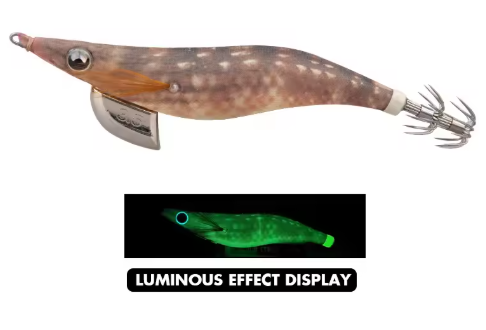

🦐 Patrón ultra natural tipo gamba, ideal para aguas claras y calamares muy desconfiados.
| Condición | Eficiencia |
|---|---|
| ☀️🌊 Día soleado / agua clara | 🟢🟢 Muy alta |
| 🌅 Luz baja | 🟢🟢 Muy alta |
| 🌙🌑 Noche | 🟢 Alta |
| 🦑😴 Calamares pasivos | 🟢🟢 Muy alta |
| 🦑🔥 Calamares agresivos | 🟢 Alta |